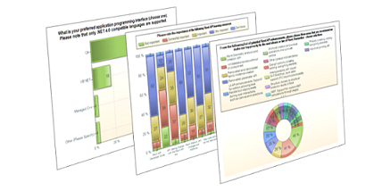

Revit API Wishlist Survey
Once again, the time is ripe for another round of API wishlist surveys.
This year's Revit API wishlist survey is now open.

Please take a moment to participate and complete this survey and let us hear your feedback. It will take less than 5 minutes to complete.
The Revit engineering team will use the results to understand your needs and help prioritize the areas of API enhancements in future planning, so is has a strong and immediate influence on the future API direction.
If you leave your email address, we will send you the final result after it is concluded. The email address you leave will be used solely for this purpose and not shared or used in any other way.
The survey will remain open for three weeks until June 15th, 2013.
We look forward to receiving your feedback!
Thank you!